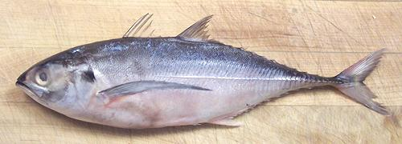

Hardtail Scad

[Torpedo Scad; Megalaspis cordyla]
This Indo-West Pacific fish is found from East Africa to Japan and very
common around Indonesia and northern Australia. It can grow to 31 inches
and nearly 9 pounds but the photo specimen was 11-1/2 inches and weighed
10 ounces. This is a highly commercial fish in Southeast Asia, but
despite the huge numbers taken, they are IUCN listed NC (Least Concern).
More on Scad.
With all its lumpy armor and spiny fins running practically the full
length of of top and bottom, this would seem to be an almost impossible
fish to eat. In actuality, it's quite easy (see Methods below).
The flesh of hardtail scad is "dark meat" but milder than, for instance,
most mackerel. It stays very firm with any method of cooking.
Yield: A 10 ounce fish yielded 3.7 ounces of fillets
by Method #2 (37%), it'd be a bit more (probably 40%) using Method #1.
Skin: The skin has almost no shrink when cooked, but the
hard scutes are a problem, for almost the full length of the body.
Scutes: As with other scads, there's a row of hard
scutes along the straight part of the lateral line. Unlike other scads
the lateral line is straight the full length of the fish and the scutes
are very large and wide. It isn't just the tail that's hard on this fish.
They must be removed, which can be done after cooking (Method #1) or by
removing the skin (Method #2). You could also make a cut throught the
skin on both sides of the scute line and peel them off, leaving most of
the skin.
Stock: Not good - the heads fins and bones make an
unpleasant, strong flavored stock - just discard them.
Method #1
- easiest and yields the most flesh.
- Scale the fish - not hard, it has few scales, they're very small and
scrape off easily without flying about.
- Clean the fish. Just cut off the head behind the pectoral fins and
discard. Cut the belly all the way back beyond the vent to the fins
and clean out the innards.
- Cut off the tail. Cut through the skin all the way around the edges
so it is loose from the fins and keel.
- Steam for about 10 to 15 minutes depending on size.
- Let the fish cool enough to handle.
- Use a knife blade to flake off the scutes for the full length of
the fish, both sides.
- Pull out the fins both top and bottom.
- Push the meat off the bones from the center line out, top and bottom,
both sides.
- Check for any bones still with the meat, particularly in the rib cage
area.
Method #2
- if you need raw fillets.
- Scale the fish - not hard it has few scales, they're very small and
scrape off easily without flying about.
- Clean the fish. Just cut off the head behind the pectoral fins and
discard. Cut the belly all the way back beyond the vent to the fins
and clean out the innards.
- Cut off the tail and cut the edges of the skin all the way around.
- Start peeling the skin off diagonally from the top front. Get your
fingers under it to hold the flesh in place as you peel. Grab by the line
of scutes and peel back and off the tail.
- Now that you have a skinless fish, just fillet the usual way.
sf_scadhtz 06 - www.clovegarden.com
©Andrew Grygus - agryg@clovegarden.com - Photos on this
page not otherwise credited are © cg1 -
Linking to and non-commercial use of this page permitted